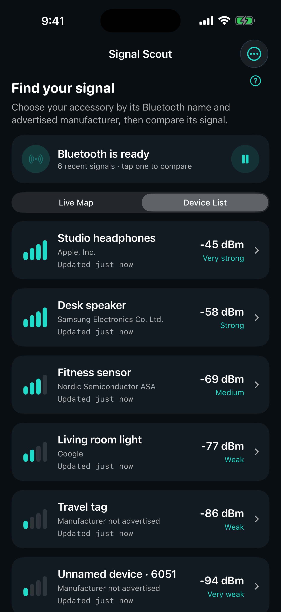

Wake your accessory
It must be powered on and advertising Bluetooth Low Energy. Open the case or wake the item when possible.
BLUETOOTH SIGNAL FINDER FOR IPHONE
Misplaced a Bluetooth accessory? Compare nearby signal strength, try a few slow steps, and see what changes.
See the device name and advertised manufacturer when available, then compare Bluetooth Low Energy signal strength in the map or list.
App Store review in progress. Free, without subscriptions or a time limit.

FROM SIGNAL TO NEXT STEP
It must be powered on and advertising Bluetooth Low Energy. Open the case or wake the item when possible.
Look for the Bluetooth name and advertised manufacturer. When details are missing or generic, bring an accessory you control close and compare the signal that strengthens.
Take a few slow steps, keep the phone oriented the same way, and wait for the smoothed trend before trying another position.
A stronger signal alone does not identify your item. Nearby accessories may appear too.
READ THE CLUE CORRECTLY
On the map, closer to the center means stronger signal strength. A dot's angle is just visual spacing; it is not a direction to walk.
In the list, −50 dBm is stronger than −80 dBm. Walls, reflections, orientation, and an accessory's transmit power can affect either reading.
Understand RSSI and signal trendsBEFORE YOU START
Visibility varies by accessory and state. Signal Scout cannot guarantee discovery, identify owners, or locate a powered-off item. It does not replace a manufacturer's finding network.
ON YOUR PHONE
Bluetooth scanning and analysis run locally. Device names and manufacturer identifiers are processed in memory on your phone. Signal Scout does not request location or upload signal observations.
COMMON QUESTIONS
It can help you compare signals from headphones or earbuds that actively advertise Bluetooth Low Energy and are visible to iOS. Some stop advertising while connected, asleep, or in their case. Discovery is not guaranteed.
Signal Scout displays the Bluetooth name supplied by the advertisement or iOS, and resolves the company identifier in manufacturer data when available. Some devices omit these fields. Missing details are labeled clearly rather than guessed.
No. RSSI is approximate signal strength, not a measured distance or compass bearing. Dot angles separate the signals visually. Use the trend to compare positions, not as turn-by-turn navigation.
The upcoming release offers every feature without payment, subscriptions, an account, or a time limit. The iPhone release is awaiting App Store review; this page does not yet offer a download.
Check Bluetooth and the app's Bluetooth permission, wake an accessory you own, and bring it close. Follow the no-signals troubleshooting steps.